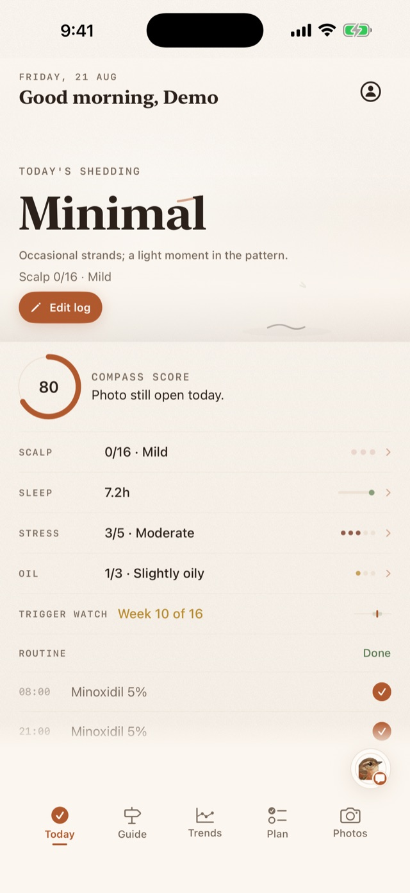
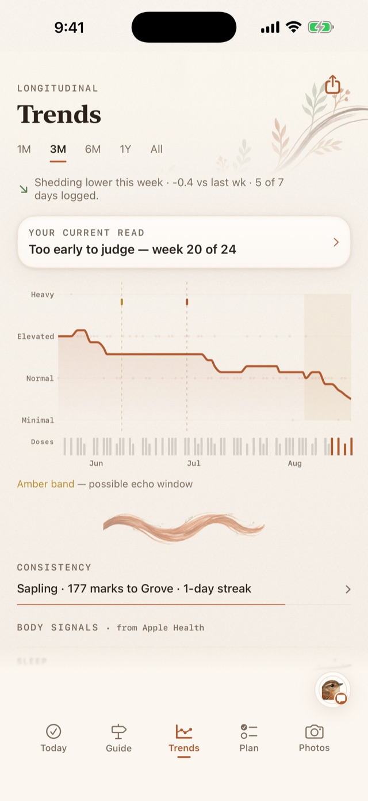

Hair Compass AI · for iPhone
An honest record
of slow change.
Hair changes over months, not mornings. Hair Compass AI keeps the daily record — scalp, shedding, routine, photos, labs — and reads it back to you in plain language. Your photos and records stay on your iPhone.
Arriving on the App Store|Support


What you keep
Six quiet records, about thirty seconds a day.
One check-in, and the day is on file. Each record is small on its own; kept daily, they become the only thing that can actually answer "is this working?"
Discrete taps, not essays. The scales match what clinicians ask about.
Standardized capture, so a comparison months apart is a real comparison.
Morning and evening steps, checked off as they happen.
Adherence lives next to the trend line it's supposed to move.
Results with reference flags, kept where your history can explain them.
The events that echo in your hair eight to twelve weeks later.
Intelligence, honestly sourced
The record stays in your hand.
Daily insights are written on your iPhone. When you ask Wren a question or run a deep analysis, a secure cloud model reads a limited summary of your tracking record — numbers, dates, notes — and writes the answer. Never your name, never your photos, and never before you've said yes.
Private by design. Check-ins, photos, labs, and Health data are stored only on your device — there is no account and no server of ours. Cloud AI answers are opt-in, reversible, and spelled out in the privacy policy.
The house rule
No before-and-after theater.
You will not find retouched scalps or ninety-day promises here, because hair biology does not work that way. The app waits a full treatment cycle — twenty-four weeks for density — before it will call a verdict, and until then it says so, plainly: "Too early to judge."
Every suggestion inside the app carries its evidence tier, worn openly:
When the science is thin, the label says so — and the design lets it recede.